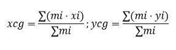

El centro de gravedad (CG) es el punto imaginario en el que se considera aplicado el peso total de un cuerpo. En ese punto se concentran todas las fuerzas de gravedad que actúan sobre las partículas del objeto.
En la mayoría de los problemas de ingeniería y física terrestre, el Centro de Gravedad coincide con el Centro de Masa. Solo difieren cuando el cuerpo es tan grande que el campo gravitatorio no es uniforme en todas sus partes (algo raro a nivel escolar). Para efectos prácticos, se usan como sinónimos.
El centro de gravedad es el promedio ponderado de las posiciones de las partículas que componen un cuerpo, donde la ponderación es el peso de cada partícula.
La posición del Centro de Gravedad es crítica para determinar la estabilidad de un objeto, especialmente en el contexto de los Tipos de Equilibrio (nuestro siguiente tema).
Es importante notar que el Centro de Gravedad no siempre se encuentra dentro del cuerpo físico. Por ejemplo, en un aro, el C.G. se encuentra en el centro del hueco. En un bumerán, el C.G. se encuentra en el espacio entre sus "alas".